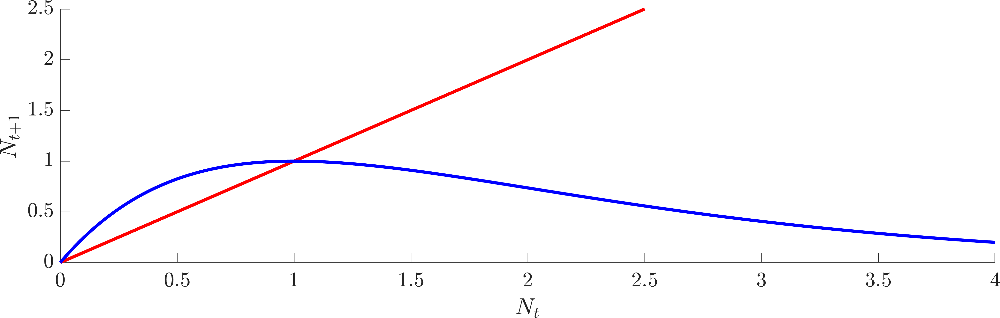
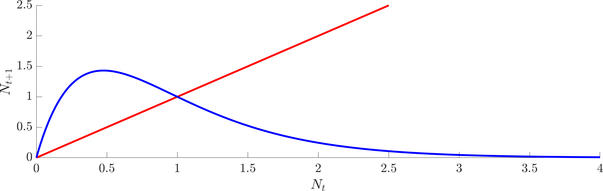
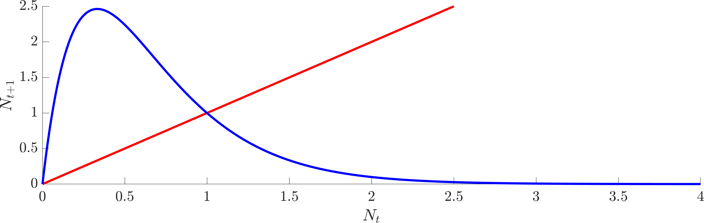

1. Flattening the curve
Image taken from the website of the “Centers for Disease Control and Prevention”.
Consider the SIR equations for modelling an infectious disease and assume that the parameter values are such that we are in a pandemic scenario, i.e. \(\rho=rS_0/a>1\),
\[\begin{align} &\dot{S}=-rSI, \quad S(0)=S_0,\tag{1}\\ &\dot{I}=rSI-aI,\quad I(0)=I_0,\tag{2}\\ &\dot{R}=aI, \quad R(0)=0. \tag{3} \end{align}\]
Note the following questions are easier if you have a good grip on the manipulations performed on the SIR model, as seen in the notes. Thus, this would be a good time to practise deriving the following quantities. However, if you are confident that you know what you are doing1 then you can simply write down the required answers.
Write down expressions for the maximum number of infected people, \(I_{\textrm{max}}\), and total number of infected people, \(I_\Sigma\), in terms of \(a, r, S_0, I_0\) and \(S_\infty\).
Write down the expression that \(S_\infty\) must satisfy; call this the consistency equation.
Plot the left- and right-hand sides of the consistency equation on the same axes with \(S_\infty\) on the \(x\)-axis. Demonstrate that there are, generally, two possible roots and highlight which root we are interested in.
In the early stages of the corona pandemic much was made of the “Flatten the Curve” idea. Namely, if you can reduce the infection rate then it was reported that although it would make the disease last longer it would reduce the maximum number of infections, thus, allowing the health care system to cope (see Figure 1).
Consider two infection rates \(r_1\), \(r_2\), such that \(r_1>r_2\). Show that \(I_{\textrm{max}}(r_1)>I_{\textrm{max}}(r_2)\).
Hint 1: we are considering a pandemic situation, so the reproduction number, \(\rho\), is greater than one.
Hint 2: consider the derivative of \(I_{\textrm{max}}(r)\) with respect to \(r\).
As shown in the last question, reducing the infection rate does reduce the maximum number of infections. However, it also extends the infection period (see Figure 1). Thus, are we sure that the total number of infectives is smaller? For example, instead of infecting 10 people in week 1 are we infecting 1 person per week and making the infection last 10 weeks? Namely, are we just delaying the inevitable, or does reducing the infection rate actually reduce the total number of infectives?
Show that if \(r_1>r_2\) then \(I_{\Sigma}(r_1)>I_{\Sigma}(r_2)\).
Hint 1: Approach this equation graphically using the result from question 3.
2. Discrete dynamics
Consider the following discrete evolution equation of a population \(N_t\) at generation \(t\),
\[N_{t+1}=\frac{bN_t^2}{1+N_t^2}-EN_t=f(N_t), \tag{4}\]
where \(b>2\) and \(E>0\) are constants.
Suggest a biological interpretation of equation (4).
Determine the three steady states of equation (4). Define them to be \(N_0<N_-\leq N_+\). You should be able to show that \(N_\pm\) only exist if \(E<(b-2)/2=E_M\).
Draw \((x,y)\) graphs of
\[y=\frac{bx^2}{1+x^2} \text{ and }y=Ex \tag{5}\]
for a variety of \(b\) and \(E\). Using these graphs draw three \((N_t,N_{t+1})\) plots for the three cases
\(E<E_M\),
\(E=E_M\),
\(E>E_M\).
Focusing now on the case of \(E<E_M=(b-2)/2\), show by cobwebbing, or otherwise, that the model is realistic only if the population, \(N_t\), always lies between the two positive values \([N_-,N_2]\), where you should analytically derive the form of \(N_2\).
By cobwebbing, or otherwise, discuss the stability of the steady states \(N_0, N_\pm\).
3. Cobwebbing in Matlab
The code below simulates the dynamics as presented in question 2. Once again, you can download this code from Learning Central, or copy and paste it from here.
Simulating discrete dynamics is, in some ways, easier than simulating ODEs. Given a value for \(N_t\) and a function \(f\) you simply evaluate \(f(N_t)\) to calculate \(N_{t+1}\). Thus, most of the cobwebbing code below is for plotting purposes. The actual calculation step occurs in lines 43-46.
Have a go at altering the parameters \(b\) and \(E\) in lines 9-10. Equally, change the initial conditions in lines 36-38 to see where you will end up.
If you are really feeling adventurous, alter the code to work with the discrete logistic equation and simulate chaos!
%% Ensure we start from a blank slate
clear all
close all
clc
%% Initialise variables
fs=15; % Set fontsize
b=4;
E=0.8;
Np=(b+sqrt(b^2-4*(1+E)^2))/(2*(1+E)); %N+ from question 2.
Nn=(b-sqrt(b^2-4*(1+E)^2))/(2*(1+E)); %N- from question 2.
N1=(b-sqrt(b^2-4*E*(1+Nn^2)*(E*(1+Nn^2)-b*Nn)))/(2*E*(1+Nn^2)); %N1 from question 2.
N2=(b+sqrt(b^2-4*E*(1+Nn^2)*(E*(1+Nn^2)-b*Nn)))/(2*E*(1+Nn^2)); %N2 from question 2.
%% Set up the basic plotting space
N=linspace(-1,8);
hold on
plot(N,N,'k') % Plot N(t)=N(t+1)
plot(N,b*N.^2./(1+N.^2)-E*N,'b') % Plot N(t+1)=f(N(t))
plot(N,Nn*ones(1,length(N)),'--k','linewidth',1) % Plot N(t+1)=N-
plot([N1 N1],[0 Nn],'--k','linewidth',1) % Plot N(t)=N1
plot([Nn Nn],[0 Nn],'--k','linewidth',1) % Plot N(t)=N-
plot([N2 N2],[0 Nn],'--k','linewidth',1) % Plot N(t)=N2
axis([0 5 0 2])
xlabel('$N_t$')
ylabel('$N_{t+1}$')
%% Calculate the cobweb diagram
% The Cobweb(x1,x2,x3,x4) function has 4 arguments x1-x4.
% x1 is the initial point from which the cobweb starts.
% x2 and x3 are the parameters b and E, respectively.
% x4 is the colour of the cobweb.
Cobweb(3,b,E,'b')
Cobweb(0.5,b,E,'r')
Cobweb(4.5,b,E,'r')
set(gca,'fontsize',fs) % Set fontsize.
function Cobweb(N0,b,E,c)
% The following for loop computes the first 100 iteration values.
Nt(1)=N0;
for i=1:100
Nt(i+1)=b*Nt(i)^2/(1+Nt(i)^2)-E*Nt(i);
end
% The following code plots the cobweb.
plot([Nt(1) Nt(1)],[0 Nt(2)],c,'linewidth',1)
for i=1:100-2
plot([Nt(i) Nt(i+1)],[Nt(i+1) Nt(i+1)],c,'linewidth',1)
plot([Nt(i+1) Nt(i+1)],[Nt(i+1) Nt(i+2)],c,'linewidth',1)
end
endExam Revision
4. A different infection model
An animal population is prone to a fatal disease. There is a limited vaccine that creates immunity in the susceptible population but has no effect on infected animals. The higher the number of infected animals observed, the more vigorously vaccinations are administered.
Let \(I\) denote the number of infected animals, \(S\) the number of susceptible animals, \(V\) the number of vaccinated animals and \(R\) the number of dead animals. An ordinary differential equation description of these interactions can be written
\[\begin{align} \frac{\text{ d}S}{\text{ d}T} =&-\beta SI-pSI,\tag{6}\\ \frac{\text{ d}I}{\text{ d}T} =&\beta SI-aI,\tag{7}\\ \frac{\text{ d}R}{\text{ d}T} =&aI,\tag{8}\\ \frac{\text{ d}V}{\text{ d}T} =&pSI. \tag{9} \end{align}\]
Explain the biological interpretation of each of the terms in the model.
Non-dimensionalise the model to give
\[\begin{align} \frac{\text{ d}s}{\text{ d}t} =&-si(1+\eta),\tag{10}\\ \frac{\text{ d}i}{\text{ d}t} =&i(s-1),\tag{11}\\ \frac{\text{ d}r}{\text{ d}t} =&i,\tag{12}\\ \frac{\text{ d}v}{\text{ d}t} =&\eta si. \tag{13} \end{align}\]
where \(s, i, r, v\) and \(t\) are the non-dimensional variables corresponding to the upper-case dimensional variables. The parameter \(\eta>0\) should be given in terms of \(a, \beta\) and \(p\).
Suppose that the initial conditions are
\[s(0)=s_0, i(0)=i_0, r(0)=0, v(0)=0,\]
where \(s_0, i_0>0\) and assume that \(i\rightarrow 0\) as \(t\rightarrow\infty\).
Show
\[s+i+r+v=\textrm{constant}, \tag{14}\]
where the constant should be defined.
What does equation (14) mean? Is this physically correct?
Define \(r_\infty=\lim_{t\rightarrow\infty}r(t)\) and \(s_\infty=\lim_{t\rightarrow\infty}s(t)\). What do \(r_\infty\) and \(s_\infty\) represent?
By considering \(\text{ d}i/\text{ d}s\) and \(\text{ d}v/\text{ d}s\) show that
\[r_\infty=\frac{1}{1+\eta}\ln\left(\frac{s_0}{s_\infty}\right). \tag{15}\]
5. Discrete Ricker model
Suppose that the evolution of a population can be described by a discrete-time Ricker model of the form
\[N_{t+1} = N_t \exp\left(r\left(1-\frac{N_t}{K}\right)\right)=f(N_t), \tag{16}\]
where \(r,K>0\) are constants.
Describe the biological interpretation of the model.
Determine any non-negative steady states and their linear stability.
Let us now fix \(K=1\).
Construct a cobweb map for the model when \(0<r<2\) and discuss the global qualitative behaviour of the solutions.
Using Figure 2, or otherwise, specify the steady states and their stability in the three cases of the discrete Ricker model when \(r=1\), 2.1 and 3.

(a) \(r=1\)

(b) \(r=2.1\)

(c) \(r=3\)
Figure 2. Plot of the discrete Ricker model for different values of \(r\) (specified beneath each figure). In all cases \(K=1\).